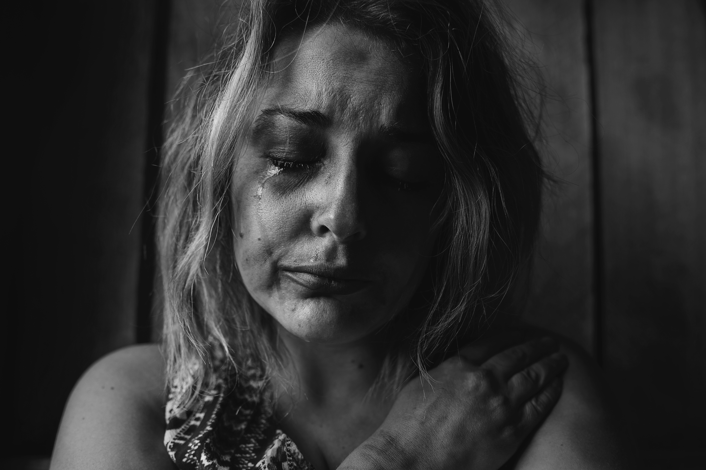
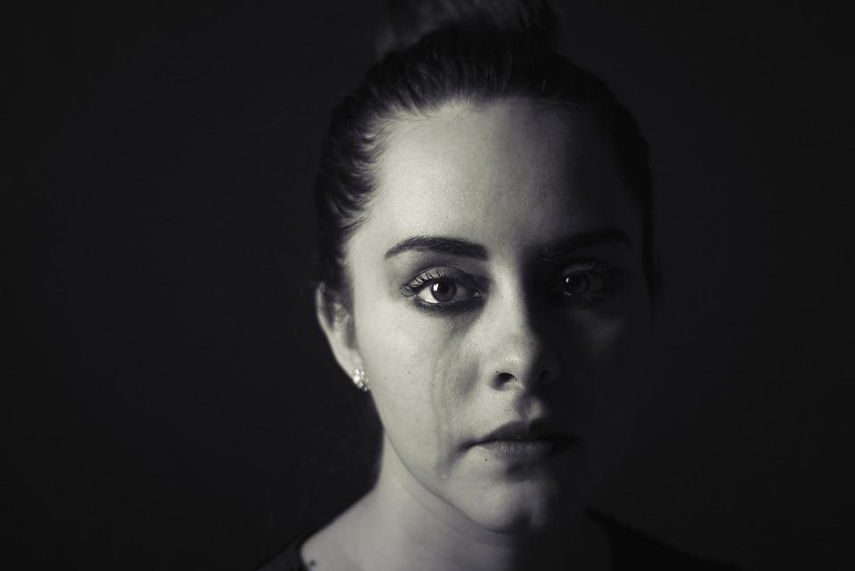

A importância de identificar os tipos de agressão:

ABUSO FÍSICO
Abuso físico é o abuso que envolve contacto físico com a intenção de infligir medo, dor, outro tipo de sofrimento físico ou lesões corporais. As dinâmicas de abusos físicos no contexto familiar são muitas vezes complexas. A violência física pode ser o culminar de outros tipos de comportamento abusivo, como ameaças, intimidação e limitação da auto-determinação da vítima através do isolamento forçado, manipulação e outras limitações da liberdade pessoal.

ABUSO SEXUAL
A Organização Mundial de Saúde define abuso sexual como qualquer ato sexual, tentativa de obter um ato sexual, abordagens ou comentários de cariz sexual indesejados ou tráfico sexual direcionados contra determinada pessoa por meio de coerção.

ABUSO PSICOLÓGICO
Abuso psicológico ou abuso emocional é um padrão de comportamento com o objetivo de ameaçar, intimidar, desumanizar ou sistematicamente debilitar a auto-estima de outra pessoa. A Convenção do Conselho da Europa para a Prevenção e o Combate à Violência Contra as Mulheres e a Violência Doméstica define violência psicológica como a intenção de lesar gravemente a integridade psicológica de uma pessoa por meio de coação ou ameaças